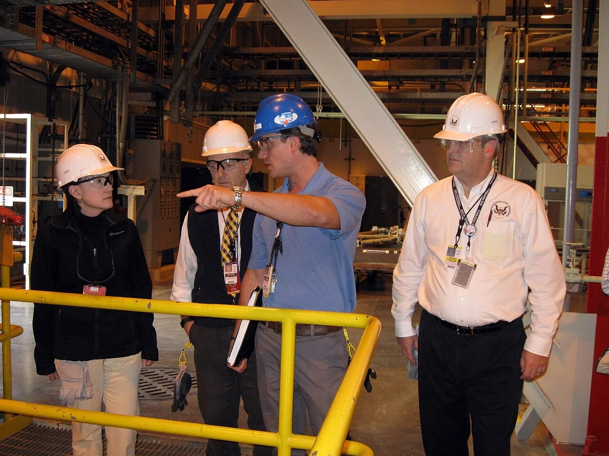
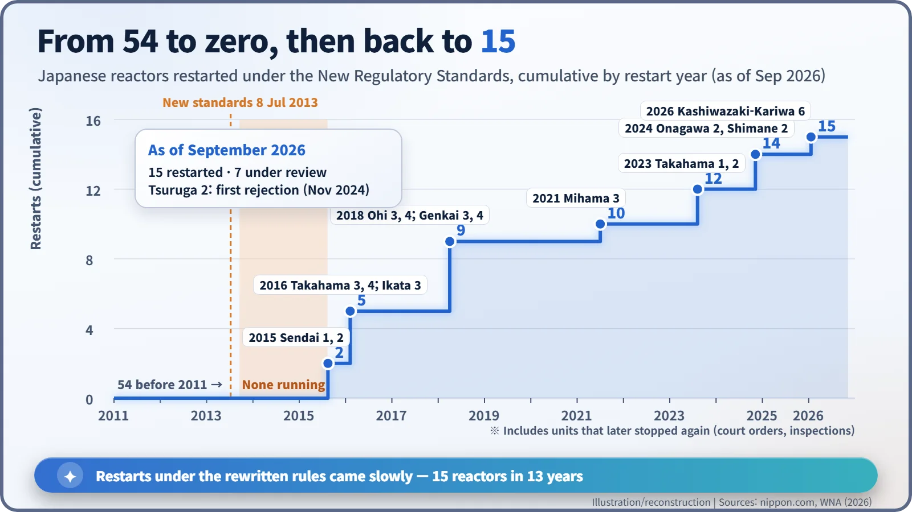
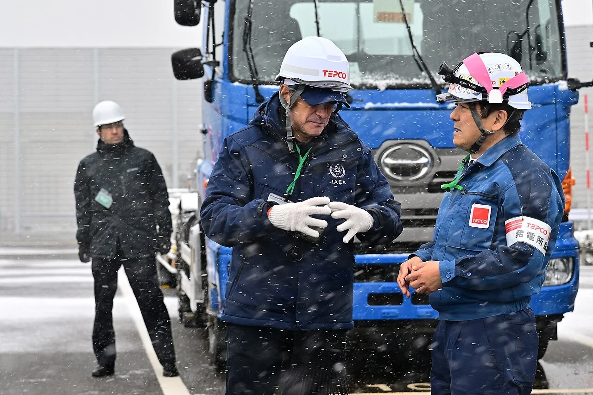

Nuclear History · 282
Rewriting the Exam: Post-Fukushima Regulatory Reform, from Stress Tests to Japan's New Standards
After Fukushima showed how little stood beyond the design basis, Europe tested the margins, the US added portable equipment and Japan rewrote its rules — leaving it with zero reactors for two years and 15 restarts by 2026.
The Fukushima Daiichi accident of March 2011 showed how little stood between a nuclear plant and disaster once nature exceeded its design basis. Europe answered with stress tests and peer review, the United States with orders that led to portable FLEX equipment, and Japan with a new regulator and rewritten standards that left it with zero operating reactors from 2013 to 2015 and 15 restarts by 2026.
Zero reactors
On 15 September 2013, Unit 4 at the Ohi nuclear plant in Fukui Prefecture shut down for a routine inspection. On an ordinary day that would not have made the news. But that day the number of reactors generating electricity in Japan fell to zero, in a country that had run 54 of them before March 2011. [2]
Japan had not run out of reactors. It had changed the exam. Since 8 July, two months earlier, a completely rewritten set of safety standards had been in force, and no reactor could restart until it passed.
The blank space "beyond the design basis"
Every nuclear plant is designed around a line that says "this much is enough": the design basis. The Fukushima Daiichi accident asked a hard question. When nature crosses that line, what holds next? When the tsunami flooded even the emergency generators, the answer turned out to be almost blank.
So after the accident, countries asked much the same thing. How far can our plants go beyond the design basis, and at what point does the situation suddenly collapse? Engineers call that point a "cliff edge": the place where a slowly worsening situation tips into a sudden one. The way each region wrote its answer, though, was very different.
![Timeline from 2011 to 2015 in three lanes. Japan: two-stage stress tests July 2011, NRA established 19 September 2012, New Regulatory Standards 8 July 2013, Sendai 1 first restart August 2015, with a shaded band for zero reactors running from September 2013 to August 2015. EU: European Council request 24-25 March 2011, stress tests begin 1 June 2011, final peer-review report 26 April 2012, Safety Directive amended July 2014. US and IAEA: NRC task force with 12 recommendations July 2011, IAEA Action Plan September 2011, three NRC orders 12 March 2012](../../assets/images/history/282-post-fukushima-regulation/fig1-three-responses.webp)
Europe: a test with no pass or fail
Europe moved first. On 24–25 March 2011 the European Council asked for a fresh assessment of the risks and safety of every nuclear plant in the EU, and on 1 June 2011 the so-called "stress tests" began. The idea was to assume extreme conditions one by one — earthquakes and floods, loss of electrical power, loss of the ultimate heat sink, severe-accident management — and to measure how much margin was left. [4]
The marking scheme was the interesting part. National regulators wrote reports, experts from other countries reviewed them on paper, and in March 2012 the reviewers visited the plants themselves. The final report, issued on 26 April 2012, boiled down to two sentences. No plant had to be shut down for technical reasons. But practically every plant needed site-specific safety improvements. [4] [5]
According to a European Parliament resolution adopted in March 2013, 145 reactors in the EU and 20 outside it (in Switzerland and Ukraine, among others) went through the process, and improvements for the 132 operating EU reactors were estimated to cost EUR 10–25 billion. The same resolution warned that the stress tests "will not guarantee the safety of a nuclear plant", and regretted that off-site emergency preparedness had been left out. The results fed into an amended EU Nuclear Safety Directive in July 2014. [5]
The United States: more pumps in the shed
The US Nuclear Regulatory Commission (NRC) received 12 recommendations from its Near-Term Task Force in July 2011. On 12 March 2012, a year after the accident, it issued three orders. Plants had to have "mitigation strategies" to keep the core, the containment and the spent fuel pool cooled even during external events beyond the design basis. Boiling water reactors with Mark I and Mark II containments needed reliable hardened vents. And every plant needed reliable water-level instruments in its spent fuel pools. [6]
The industry's answer to the first order was called FLEX. Diesel-driven pumps and generators, ventilation fans, hoses, cables and satellite phones are stored on site as spares, and two national response centres in Memphis and Phoenix hold more equipment that can be shipped in. If the fixed systems are all lost, there is still a last resort that people can carry, connect and run.

Japan: rewriting the rulebook
Japan went further. The government introduced two-stage stress tests in July 2011, but they were a stopgap. The real change came from the Nuclear Regulation Authority (NRA), set up on 19 September 2012, which rewrote the standards themselves. The New Regulatory Standards, in force from 8 July 2013, included: [2] [1]
- much tougher earthquake and tsunami assumptions, with any fault that cannot be shown to have been inactive for the past 120,000–130,000 years or so treated as active;
- mandatory measures against severe accidents, including filtered vents for boiling water reactors that clean radioactive material out of any gas that has to be released;
- "specialised safety facilities" to cope with terrorism or a deliberate aircraft crash;
- "backfitting": applying the new rules to plants that already exist.
Restarts were slow. The first plant through was Kyushu Electric's Sendai Unit 1, which came back in August 2015. In the other direction, in November 2024 the NRA turned down Tsuruga Unit 2 because it could not rule out activity on a fault near the reactor building — the first rejection under the new rules. [7]

TEPCO's reactor returns after 14 years
On 21 January 2026, Tokyo Electric Power Company (TEPCO), the operator of Fukushima Daiichi, began withdrawing control rods at Unit 6 of its Kashiwazaki-Kariwa plant in Niigata Prefecture. It was the company's first restart since the accident. Niigata's governor, Hideyo Hanazumi, had given his consent in November 2025, and the prefectural assembly backed him in December. An alarm halted the start-up the next morning, but the unit entered commercial operation on 16 April 2026 — the 15th Japanese reactor restarted under the new standards. [3] [1]

The number needs a footnote, though. The 15 include units that later stopped again because of court orders or inspections. As of September 2026, seven more reactors were still under review, and that same month Chubu Electric withdrew its applications for Hamaoka Units 3 and 4 after manipulated seismic data came to light (status as of November 2026). Local opinion on restarts remains divided in many places. [2]
The three regions wrote very different answer sheets, but they share one line: the design basis is a starting point, not the finish. Safety standards are less a building finished once after an accident than an exam paper that is marked again whenever new knowledge arrives.